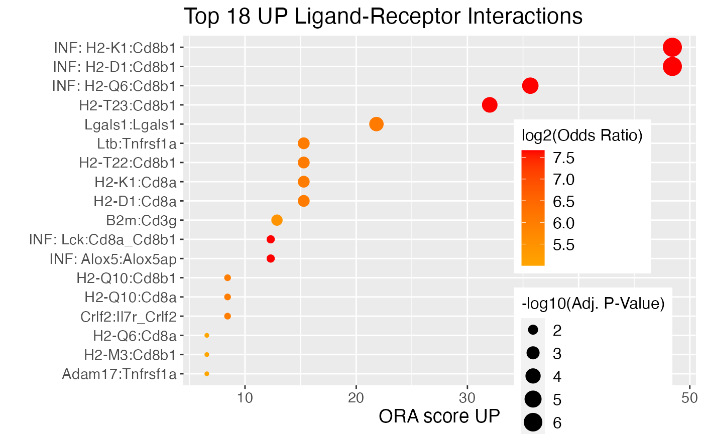
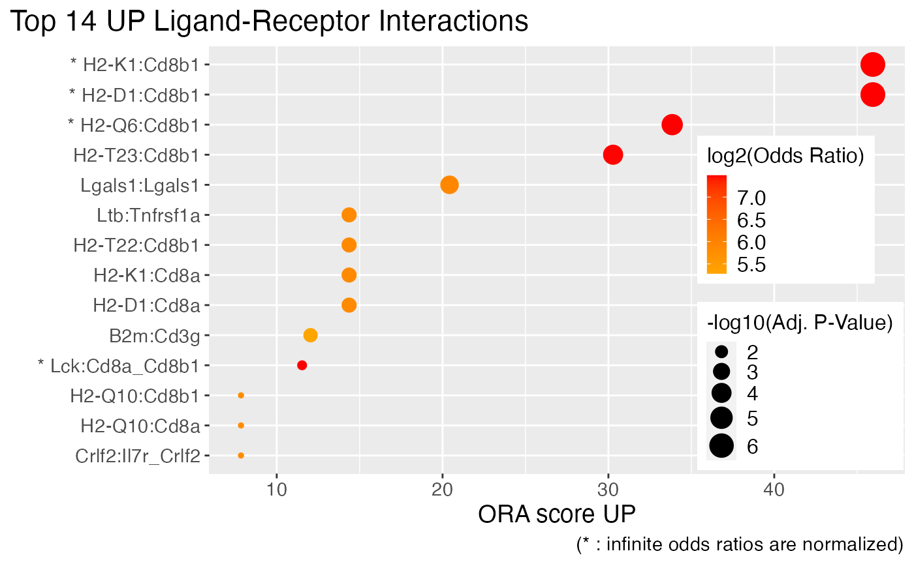

scDiffCom-vignette.RmdThe goal of scDiffCom is to investigate how cell-cell interactions detected in scRNA-seq data change between two biological conditions. You can also simply use it in “detection-mode” if you are not interested in comparing conditions.
In addition to this vignette, we also recommend reading our (manuscript in preparation) that explains the details of the statistical methods used by the package. Some important terminology includes:
Apoe:Ldlr (simple) or Col3a1:Itgb1_Itga2 (complex/heteromeric)(B cell, T cell; Apoe:Ldlr) where B cell is the emitter cell type expressing the ligand Apoe and T cell is the receiver cell type expressing the receptor Ldlr.Note: all the toy-model results below do not convey any meaningful biology.
scDiffCom uses a scRNA-seq Seurat object as input. Here, we use a toy-model object (available as part of our package) that has been down-sampled. It contains cells divided in 5 cell types as well as two age groups (“young” and “old”) on which differential analysis will be performed.
library(Seurat)
## Attaching SeuratObject
library(scDiffCom)
library(data.table)
library(ggplot2)
# Load the toy-model object
seurat_object <- scDiffCom::seurat_sample_tms_liver
seurat_object
## An object of class Seurat
## 726 features across 468 samples within 1 assay
## Active assay: RNA (726 features, 0 variable features)
# Cell-type annotations must be present beforehand in the object meta.data
head(seurat_object[["cell_type"]])
## cell_type
## A16_B000767_B009945_S16.mm10-plus-4-0 T cell
## A16_D045313_B009942_S16.mm10-plus-4-0 endothelial cell of hepatic sinusoid
## A21_B001247_B009941_S21.mm10-plus-4-0 B cell
## A22_B001247_B009941_S22.mm10-plus-4-0 B cell
## A2_D045313_B009942_S2.mm10-plus-4-0 hepatocyte
## A5_B001247_B009941_S5.mm10-plus-4-0 T cell
# The two conditions of interest must also be specified in the object meta.data
table(seurat_sample_tms_liver[["age_group"]])
##
## OLD YOUNG
## 250 218scDiffcom infers cell type to cell type communication patterns from the expression of genes known to be involved in ligand-receptor interactions (LRIs). The package contains it own internal databases of curated LRIs (for humand and mouse), retrieved from previous studies.
You do not need to call the LRI databases explicitly when performing an analysis. However, you can still access and explore them as follows:
# Load, e.g., the mouse database
data(LRI_mouse)
# Display the data.table of LRIs (more information available in other columns)
LRI_mouse$LRI_curated[, c("LRI")]
## LRI
## 1: 1700013F07Rik:Plscr4
## 2: 2300002M23Rik:Ddr1
## 3: 9530003J23Rik:Itgal
## 4: A2m:Lrp1
## 5: Aanat:Mtnr1a
## ---
## 4737: a:Mc1r
## 4738: a:Mc2r
## 4739: a:Mc3r
## 4740: a:Mc4r
## 4741: a:Mc5r
# Display the data.table of GO Terms attached to each LRI (more information available in other columns)
LRI_mouse$LRI_curated_GO[, c("LRI", "GO_NAME")]
## LRI GO_NAME
## 1: 1700013F07Rik:Plscr4 cellular_component
## 2: 1700013F07Rik:Plscr4 cell part
## 3: 1700013F07Rik:Plscr4 molecular_function
## 4: 1700013F07Rik:Plscr4 binding
## 5: 1700013F07Rik:Plscr4 biological_process
## ---
## 267431: a:Mc5r biological regulation
## 267432: a:Mc5r regulation of biological process
## 267433: a:Mc5r regulation of cellular process
## 267434: a:Mc5r signal transduction
## 267435: a:Mc5r regulation of metabolic processAll results are obtained by simply calling run_interaction_analysis. The detection and differential analyses rely on permutation tests. By default, 1000 iterations are performed as this is sufficient for a quick explanatory analysis. In general, we would recommend using 10’000 permutations. Parallel computing can be easily enabled by loading the future package and setting the plan accordingly.
# Load the future package (optional)
library(future)
plan(sequential) # sequentially in the current R process, equivalent to do nothing
#plan(multisession, workers = 4) # background R sessions
#plan(multicore, workers = 4) # forked R processes, not Windows/not RStudio
# Run differential analysis with default parameters
scdiffcom_object <- run_interaction_analysis(
seurat_object = seurat_object,
LRI_species = "mouse",
seurat_celltype_id = "cell_type",
seurat_condition_id = list(
column_name = "age_group",
cond1_name = "YOUNG",
cond2_name = "OLD"
)
)
## Extracting data from assay 'RNA' and slot 'data' (assuming normalized log1p-transformed data).
## Converting normalized data from log1p-transformed to non-log1p-transformed.
## Input data: 726 genes, 468 cells and 5 cell-types.
## Input ligand-receptor database: 4741 mouse interactions.
## Number of LRIs that match to genes present in the dataset: 1219.
## Type of analysis to be performed: differential analysis between YOUNG and OLD cells.
## Total number of potential cell-cell interactions (CCIs): 30475 (5 * 5 * 1219).
## Performing permutation analysis (1000 iterations by batches of 1000) on 9366 potential CCIs.
## Performing batch 1 of 1.
## Filtering and cleaning 'raw' CCIs.
## Returning 1986 detected CCIs.
## Performing over-representation analysis on the categories: LRI, LIGAND_COMPLEX, RECEPTOR_COMPLEX, ER_CELLTYPES, EMITTER_CELLTYPE, RECEIVER_CELLTYPE, GO_TERMS, KEGG_PWS.
## Successfully returning final scDiffCom object.The output of run_interaction_analysis is an S4 object of class scDiffCom:
scdiffcom_object
## An object of class scDiffCom with name scDiffCom_object
## Analysis performed: differential analysis between YOUNG and OLD cells
## 1986 detected CCIs across 5 cell types
## Over-representation results for LRI, LIGAND_COMPLEX, RECEPTOR_COMPLEX, ER_CELLTYPES, EMITTER_CELLTYPE, RECEIVER_CELLTYPE, GO_TERMS, KEGG_PWSNote: we recommend accessing the slots of the object with the provided accessors.
The slot cci_table_detected is a data.table that contains all biologically relevant CCIs (one per row) with columns providing useful information such as how they are regulated between the two conditions (here young and old):
# Retrieve and display all detected CCIs
CCI_detected <- GetTableCCI(scdiffcom_object, "detected", simplified = TRUE)
CCI_detected[, c("CCI", "REGULATION")]
## CCI REGULATION
## 1: B cell_B cell_Adam10:Fcer2a FLAT
## 2: B cell_B cell_Btla:Cd79a NSC
## 3: B cell_B cell_Cd48:Cd2 NSC
## 4: B cell_B cell_Cd72:Sema4d NSC
## 5: B cell_B cell_Copa:Cd74 FLAT
## ---
## 1982: myeloid leukocyte_myeloid leukocyte_Vasp:Itga4 FLAT
## 1983: myeloid leukocyte_myeloid leukocyte_Vcam1:Itgb1_Itga4 FLAT
## 1984: myeloid leukocyte_myeloid leukocyte_Vcam1:Itgb1_Itga9 FLAT
## 1985: myeloid leukocyte_myeloid leukocyte_Vcam1:Itgb7_Itga4 FLAT
## 1986: myeloid leukocyte_myeloid leukocyte_Vcam1:Msn FLAT
# Number of CCIs per regulation type
table(CCI_detected$REGULATION)
##
## DOWN FLAT NSC UP
## 120 973 858 35Detected CCIs can be explored either one by one by looking at the data.table, more globally based on our over-representation analysis (see below) or from graphs such as this volcano plot:
ggplot(
CCI_detected,
aes(
x = LOGFC,
y = -log10(BH_P_VALUE_DE + 1E-2),
colour = REGULATION
)
) + geom_point(
) + scale_colour_manual(
values = c("UP" = "red", "DOWN" = "blue", "FLAT" = "green", "NSC" = "grey")
) + xlab(
"log(FC)"
) + ylab(
"-log10(Adj. p-value)"
)
The slot ora_table contains a list of data.tables giving the results of the over-representation analysis performed on predefined categories:
# Retrieve the ORA results
ORA_results <- GetTableORA(scdiffcom_object, categories = "all", simplified = TRUE)
# Categories available
names(ORA_results)
## [1] "LRI" "LIGAND_COMPLEX" "RECEPTOR_COMPLEX"
## [4] "ER_CELLTYPES" "EMITTER_CELLTYPE" "RECEIVER_CELLTYPE"
## [7] "GO_TERMS" "KEGG_PWS"
# Explore, e.g., the top 10 LRIs up-regulated based on their ORA score
ORA_results$LRI[, c("VALUE", "ORA_SCORE_UP", "OR_UP", "BH_P_VALUE_UP")][order(-ORA_SCORE_UP)][1:10]
## VALUE ORA_SCORE_UP OR_UP BH_P_VALUE_UP
## 1: H2-D1:Cd8b1 Inf Inf 7.292044e-07
## 2: H2-K1:Cd8b1 Inf Inf 7.292044e-07
## 3: H2-Q6:Cd8b1 Inf Inf 3.012525e-05
## 4: Lck:Cd8a_Cd8b1 Inf Inf 2.883823e-02
## 5: H2-T23:Cd8b1 30.28268 178.35580 8.928196e-05
## 6: Lgals1:Lgals1 20.42120 59.95999 3.485409e-04
## 7: H2-D1:Cd8a 14.36497 58.14560 3.542486e-03
## 8: H2-K1:Cd8a 14.36497 58.14560 3.542486e-03
## 9: H2-T22:Cd8b1 14.36497 58.14560 3.542486e-03
## 10: Ltb:Tnfrsf1a 14.36497 58.14560 3.542486e-03
# Plot the most over-represented up-regulated LRIs
# note that PlotORA returns a ggplot object that you can further optimize (e.g. here to place the legend)
PlotORA(
object = scdiffcom_object,
category = "LRI",
regulation = "UP"
) + theme(
legend.position = c(0.85, 0.4),
legend.key.size = unit(0.4, "cm")
)
A summary of the changes in intercellular communication is given by the following graph that displays the over-represented cell types and cell-type pairs:
BuildNetwork(
object = scdiffcom_object
)run_interaction_analysis depends on several parameters that can be modified. We encourage to carefully read the documentation (?run_interaction_analysis). For convenience, the input parameters are stored in the returned object in the slot parameters:
# display the first three parameters
head(GetParameters(scdiffcom_object), 3)
## $object_name
## [1] "scDiffCom_object"
##
## $LRI_species
## [1] "mouse"
##
## $seurat_celltype_id
## [1] "cell_type"Among those parameters are four filtering thresholds that can be modified to recompute the results without having to perform the time-consuming permutation analyses again. This works because we store an intermediate table of all hypothetic CCIs in the slot cci_table_raw. The disadvantage is that storing this data.table can make the object heavy depending on the dataset. You can either decide to keep this table allowing you to quickly update your results in case you want to modify some filtering parameters or to erase this table to save space.
# create a new object with a different log fold change threshold
scdiffcom_object_stringent_logfc <- FilterCCI(
object = scdiffcom_object,
new_threshold_logfc = log(2)
)
## Filtering and cleaning 'raw' CCIs.
## Returning 1986 detected CCIs.
## Performing over-representation analysis on the categories: LRI, LIGAND_COMPLEX, RECEPTOR_COMPLEX, ER_CELLTYPES, EMITTER_CELLTYPE, RECEIVER_CELLTYPE, GO_TERMS, KEGG_PWS.
## Erasing all previous ORA results: LRI, LIGAND_COMPLEX, RECEPTOR_COMPLEX, ER_CELLTYPES, EMITTER_CELLTYPE, RECEIVER_CELLTYPE, GO_TERMS, KEGG_PWS.
# create a copy of the original object, but without the heavy intermediate table
scdiffcom_object_light <- EraseRawCCI(scdiffcom_object)
# the light object cannot be updated anymore
FilterCCI(
object = scdiffcom_object_light,
new_threshold_logfc = log(2)
)
## Error in run_filtering_and_ora(object = object, new_threshold_quantile_score = new_threshold_quantile_score, : slot 'cci_table_raw' of 'object' is empty, impossible to filterBy default, ORA is performed on a set of categories that are always present for any dataset analyzed (LRI, GO Terms, etc). However, you might want to find over-represented results for a category only relevant to your dataset. This is possible to achieve as long as you are able to build a relationship between the terms of your new category and those of a default category. As an example, we show here how we can perform ORA on cell-type families:
# Create a data.table that associates cell-type families to cell types
# Here we use the default category EMITTER_CELLTYPE (RECEIVER_CELLTYPE would also work)
cell_families_relation <- data.table(
EMITTER_CELLTYPE = c(
"B cell",
"T cell",
"endothelial cell of hepatic sinusoid",
"hepatocyte",
"myeloid leukocyte"
),
EMITTER_CELLFAMILY = c(
"leukocyte",
"leukocyte",
"endothelial cell",
"epithelial cell",
"leukocyte"
)
)
# Run ORA with the cell type families as extra annotation
scdiffcom_object <- RunORA(
object = scdiffcom_object,
extra_annotations = list(
cell_families_relation
),
overwrite = FALSE
)
## Performing over-representation analysis on the categories: EMITTER_CELLFAMILY.
## Keeping previous ORA results: LRI, LIGAND_COMPLEX, RECEPTOR_COMPLEX, ER_CELLTYPES, EMITTER_CELLTYPE, RECEIVER_CELLTYPE, GO_TERMS, KEGG_PWS.If you are not interested in comparing how CCIs change between two conditions, you can also use scDiffCom in “detection-mode” only:
# not specifying the conditions to compare will perform a detection-only analysis
scdiffcom_detection_only <- run_interaction_analysis(
seurat_object = seurat_object,
LRI_species = "mouse",
seurat_celltype_id = "cell_type",
seurat_condition_id = NULL
)
## Extracting data from assay 'RNA' and slot 'data' (assuming normalized log1p-transformed data).
## Converting normalized data from log1p-transformed to non-log1p-transformed.
## Input data: 726 genes, 468 cells and 5 cell-types.
## Input ligand-receptor database: 4741 mouse interactions.
## Number of LRIs that match to genes present in the dataset: 1219.
## Type of analysis to be performed: detection analysis without conditions.
## Total number of potential cell-cell interactions (CCIs): 30475 (5 * 5 * 1219).
## Performing permutation analysis (1000 iterations by batches of 1000) on 7669 potential CCIs.
## Performing batch 1 of 1.
## Filtering and cleaning 'raw' CCIs.
## Returning 2047 detected CCIs.
## No over-representation analysis available for the selected parameters.
## Successfully returning final scDiffCom object.